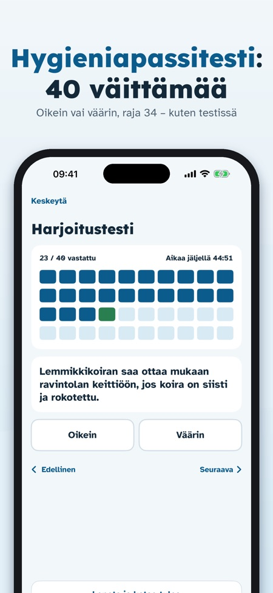
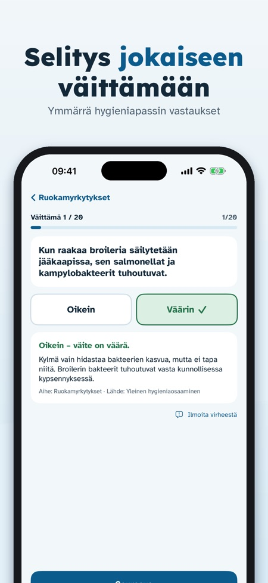
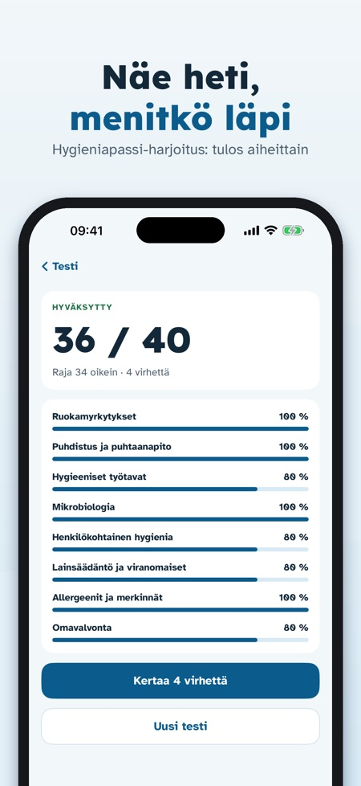

Hygieniapassi Treeni auttaa harjoittelemaan hygieniapassitestiä samanlaisilla oikein/väärin-väittämillä kuin testissä. Jokaiseen väittämään on selitys.



Hygieniapassitestiä, samanlaisilla oikein/väärin-väittämillä kuin testissä.
448 väittämää, jaoteltu aiheisiin kuten mikrobiologia, ruokamyrkytykset, hygieeniset työtavat, puhtaanapito, omavalvonta, lainsäädäntö ja allergeenit.
Kyllä, jokaiseen väittämään on selitys ja tieto aiheesta, johon se kuuluu.
Ei. Se on itsenäinen harjoitussovellus eikä Ruokaviraston sovellus; passin saa hyväksytyltä testaajalta.
Kyllä, se toimii ilman verkkoyhteyttä eikä vaadi tiliä.
Yhden harjoituskokeen, osan väittämistä ja sanaston.
Ei. Kertaosto avaa kaikki väittämät, rajattomat harjoituskokeet, virheiden kertauksen ja lämpötilasivun. Ei tilausta.
Kieli vaihdetaan sovelluksessa: suomi, svenska tai English.
Hygieniapassi Treeni auttaa harjoittelemaan hygieniapassitestiä samanlaisilla oikein/väärin-väittämillä kuin testissä.
Yksi harjoituskoe, osa väittämistä ja sanasto ovat käytettävissä ilman ostoa. Kertaosto avaa kaikki väittämät, rajattomat harjoituskokeet, virheiden kertauksen ja lämpötilasivun. Ei tilausta.
Hygieniapassi Treeni on itsenäinen harjoitussovellus. Se ei ole Ruokaviraston sovellus eikä myönnä hygieniapassia; passin saa hyväksytyltä testaajalta. Väittämät on kirjoitettu itse julkaistujen osaamisvaatimusten pohjalta.